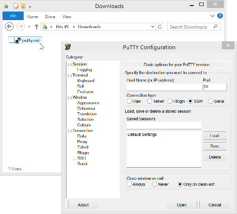

Step 1: Login to your Intel® Iot Gateway
Instructions for the Intel® IoT Gateway using Windows
-
Check the side of your Intel® Iot Gateway. The Gateway’s network SSID should be labelled on the side. The network SSID will look something like "IDPDK-22a6".
-
From your development computer, connect to the SSID labelled on your Gateway.
The password to your gateway is "windriveridp"

-
Double-click putty.exe on your computer to launch PuTTY.
The IP address of the Intel Iot Gateway is
192.168.1.1.
-
You can login with the username "root" and the password “root.”
You should now be logged into the Intel® IoT Gateway.
Setup Screen Window Manager
The screen program is a terminal based window manager that will be very helpful when you begin working with multiple terminal windows. Here is a quick primer to get you started.
Once you log in the Intel® Iot Gateway, start the screen window manager.
$ screen
You can open multiple console windows, name them and switch between them using screen. There will be many times when you will want to run several processes at the same time and screen will be very useful to launch them in separate windows. The another alternative is to simply SSH into the server multiple times. Of course, in production you will want to launch most processes at boot time using Systemd.
To create a new console type Ctrl-A C
To name the console type Ctrl-A Shift-A
To get a list of all consoles type Ctrl-A "
Launch the Mosquitto MQTT Broker
Mosquitto may already be running on the Intel IoT Gateway. However, if you need to start the process again simply type.
$ mosquitto
A traditional IoT architecture has one or more sensors, actuators and controllers. These communicate to an edge gateway. The edge gateway talks across the wide area network, often the internet, to the cloud or enterprise or server. Mosquitto is an MQTT broker that will enable sensor data to be transferred from sensors to the gateway. It's a commonly used protocol in the Internet of Things because it is a publish/subscribe protocol rather than a client/server protocol. Many applications can subscribe to the same event and the MQTT server will deliver the event to all interested applications.
Set Permissions for MongoDB and NodeJS
-
The Intel Iot Gateway is enabled with grsecurity which by default prevents the execution of processes that are not added to a white list.
Add the MongoDB daemon (
mongod)and the Mongo Client (mongo) to the whitelist type:$ paxctl -Cm /usr/bin/mongod$ paxctl -Cm /usr/bin/mongo$ paxctl -Cm /usr/bin/node -
Start the MongoDB daemon using the
mongodcommand:$ mongod